import pandas as pd
import numpy as np
import matplotlib.pyplot as plt
import seaborn as sns
Overview
Interstate 94 or I-94 is a highway in the USA that stretches from Montana in the west to Michigan in the east. In 2019, John Hogue donated a dataset of traffic volume, weather, and holiday data on I-94 from 2012 to 2018. This can be found on the following UCI Machine Learning Repository page: Metro Interstate Traffic Volume Data Set.
The goal of this project is to determine possible indicators of heavy traffic on I-94. Exploratory data analysis will be conducted with Seaborn visualizations.
Note
I wrote this notebook for the Dataquest course’s Guided Project: Finding Heavy Traffic Indicators on I-94. The general project flow and research questions came from Dataquest. However, all of the text and code here are written by me unless stated otherwise.
Package Installs
Data Overview
The following details about the I-94 dataset are stated in the archive.
holiday: Categorical; US National holidays plus regional holiday, Minnesota State Fairtemp: Numeric; Average temperature (Kelvin)rain_1h: Numeric; Amount (mm) of rain that occurred in the hoursnow_1h: Numeric; Amount (mm) of snow that occurred in the hourclouds_all: Numeric; Percentage of cloud cover (%)weather_main: Categorical; Short textual description of the current weatherweather_description: Categorical; Longer textual description of the current weatherdate_time: DateTime; Hour of the data collected in local CST timetraffic_volume: Numeric; Hourly I-94 ATR 301 reported westbound traffic volume
Note
The data were collected from a station somewhere between Minneapolis and St. Paul, Minnesota. Only westbound traffic was recorded, not eastbound. The data are not representative of the entire I-94 highway.
Below are the first few rows of the dataset.
highway = pd.read_csv("./private/2021-05-25-IHT-Files/Metro_Interstate_Traffic_Volume.csv")
highway.head()| holiday | temp | rain_1h | snow_1h | clouds_all | weather_main | weather_description | date_time | traffic_volume | |
|---|---|---|---|---|---|---|---|---|---|
| 0 | None | 288.28 | 0.0 | 0.0 | 40 | Clouds | scattered clouds | 2012-10-02 09:00:00 | 5545 |
| 1 | None | 289.36 | 0.0 | 0.0 | 75 | Clouds | broken clouds | 2012-10-02 10:00:00 | 4516 |
| 2 | None | 289.58 | 0.0 | 0.0 | 90 | Clouds | overcast clouds | 2012-10-02 11:00:00 | 4767 |
| 3 | None | 290.13 | 0.0 | 0.0 | 90 | Clouds | overcast clouds | 2012-10-02 12:00:00 | 5026 |
| 4 | None | 291.14 | 0.0 | 0.0 | 75 | Clouds | broken clouds | 2012-10-02 13:00:00 | 4918 |
There are columns about the date, traffic volume, weather, and occurrence of holidays. With this dataset, one could determine how traffic or weather changed over time. One could also determine how weather and holidays affected traffic volume.
Let us view the information on each column below.
highway.info()<class 'pandas.core.frame.DataFrame'>
RangeIndex: 48204 entries, 0 to 48203
Data columns (total 9 columns):
# Column Non-Null Count Dtype
--- ------ -------------- -----
0 holiday 48204 non-null object
1 temp 48204 non-null float64
2 rain_1h 48204 non-null float64
3 snow_1h 48204 non-null float64
4 clouds_all 48204 non-null int64
5 weather_main 48204 non-null object
6 weather_description 48204 non-null object
7 date_time 48204 non-null object
8 traffic_volume 48204 non-null int64
dtypes: float64(3), int64(2), object(4)
memory usage: 3.3+ MBIt turns out that most of the numeric columns are float64, which refers to decimal numbers.
The integer columns are clouds_all, which is in percentage, and traffic volume, which tells the number of cars.
The date_time column is listed as an object or text column. Let’s convert this to datetime format for ease of use.
highway["date_time"] = pd.to_datetime(highway["date_time"])
highway["date_time"]0 2012-10-02 09:00:00
1 2012-10-02 10:00:00
2 2012-10-02 11:00:00
3 2012-10-02 12:00:00
4 2012-10-02 13:00:00
...
48199 2018-09-30 19:00:00
48200 2018-09-30 20:00:00
48201 2018-09-30 21:00:00
48202 2018-09-30 22:00:00
48203 2018-09-30 23:00:00
Name: date_time, Length: 48204, dtype: datetime64[ns]Lastly, all of the Non-Null Counts match the total number of datapoints (48204). This could mean that there are no missing values in the dataset. It could also mean that missing values are expressed in a non-conventional way.
Data Cleaning
Duplicate Entries
There may be duplicate entries, i.e., multiple entries for the same date and hour. These must be removed.
highway.drop_duplicates(
subset = ["date_time"],
keep = "first",
inplace = True,
)
highway.shape(40575, 9)There were 7629 duplicate entries removed from the original 48204 entries.
Descriptive Statistics
Next, we view the descriptive statistics in order to find abnormal values.
highway.describe(
include = "all",
datetime_is_numeric = True,
)| holiday | temp | rain_1h | snow_1h | clouds_all | weather_main | weather_description | date_time | traffic_volume | |
|---|---|---|---|---|---|---|---|---|---|
| count | 40575 | 40575.000000 | 40575.000000 | 40575.000000 | 40575.000000 | 40575 | 40575 | 40575 | 40575.000000 |
| unique | 12 | NaN | NaN | NaN | NaN | 11 | 35 | NaN | NaN |
| top | None | NaN | NaN | NaN | NaN | Clouds | sky is clear | NaN | NaN |
| freq | 40522 | NaN | NaN | NaN | NaN | 15123 | 11642 | NaN | NaN |
| mean | NaN | 281.316763 | 0.318632 | 0.000117 | 44.199162 | NaN | NaN | 2015-12-23 22:16:28.835489792 | 3290.650474 |
| min | NaN | 0.000000 | 0.000000 | 0.000000 | 0.000000 | NaN | NaN | 2012-10-02 09:00:00 | 0.000000 |
| 25% | NaN | 271.840000 | 0.000000 | 0.000000 | 1.000000 | NaN | NaN | 2014-02-02 19:30:00 | 1248.500000 |
| 50% | NaN | 282.860000 | 0.000000 | 0.000000 | 40.000000 | NaN | NaN | 2016-06-02 14:00:00 | 3427.000000 |
| 75% | NaN | 292.280000 | 0.000000 | 0.000000 | 90.000000 | NaN | NaN | 2017-08-02 23:30:00 | 4952.000000 |
| max | NaN | 310.070000 | 9831.300000 | 0.510000 | 100.000000 | NaN | NaN | 2018-09-30 23:00:00 | 7280.000000 |
| std | NaN | 13.816618 | 48.812640 | 0.005676 | 38.683447 | NaN | NaN | NaN | 1984.772909 |
Most of the descriptives make sense, except for a few details:
- The minimum
tempis 0 Kelvin. This is called absolute zero, the lowest possible temperature of any object, equivalent to \(-273.15^{\circ}\text{C}\). It is unreasonable for the I-94 highway to reach such a low temperature, even in winter. - The maximum
rain_1his 9,831 mm, or 9.8 meters. Either this indicates a very high flood, or this is inaccurate. - The minimum
traffic_volumeis 0 cars. This may be possible, but it is still best to inspect the data.
Temperature Outliers
Let us graph a boxplot in order to find outliers among the temperature values.
sns.boxplot(
data = highway,
y = "temp",
)
plt.title("Temperature on I-94 (Kelvin)")
plt.ylabel("Temperature (Kelvin)")
plt.grid(True)
plt.show()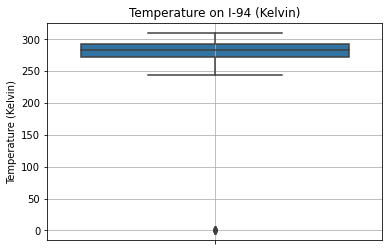
Indeed, most values fall between 250 Kelvin and 300 Kelvin (\(-23.15^{\circ}\text{C}\) and \(26.85^{\circ}\text{C}\)). The only outliers are at 0 Kelvin. This supports the idea that the zeroes are placeholders for missing values.
How many missing values are there?
(highway["temp"]
.value_counts(bins = 10)
.sort_index()
)(-0.311, 31.007] 10
(31.007, 62.014] 0
(62.014, 93.021] 0
(93.021, 124.028] 0
(124.028, 155.035] 0
(155.035, 186.042] 0
(186.042, 217.049] 0
(217.049, 248.056] 99
(248.056, 279.063] 17372
(279.063, 310.07] 23094
Name: temp, dtype: int64Only 10 datapoints have zero-values in temp. Thus, these can be dropped from the dataset.
highway = highway.loc[highway["temp"] != 0]
highway.shape(40565, 9)Now, there are 40565 rows in the dataset. Temperature outliers have been removed.
Rain Level Outliers
Similarly, we graph a boxplot below for the rain_1h column.
sns.boxplot(
data = highway,
y = "rain_1h",
)
plt.title("Hourly Rain Level on I-94 (mm)")
plt.ylabel("Hourly Rain Level (mm)")
plt.grid(True)
plt.show()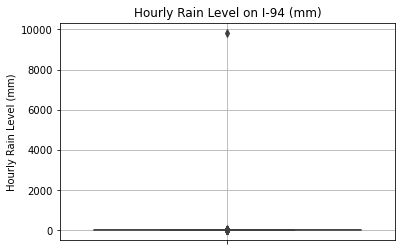
Most of the values are close to 0 mm, and there are only a few outliers near 10,000 mm. How many outliers are there?
highway["rain_1h"].value_counts(bins = 10).sort_index()(-9.831999999999999, 983.13] 40564
(983.13, 1966.26] 0
(1966.26, 2949.39] 0
(2949.39, 3932.52] 0
(3932.52, 4915.65] 0
(4915.65, 5898.78] 0
(5898.78, 6881.91] 0
(6881.91, 7865.04] 0
(7865.04, 8848.17] 0
(8848.17, 9831.3] 1
Name: rain_1h, dtype: int64There is only 1 outlying datapoint. Since a 9.8 m flood level is so unrealistic given that most of the other values are small, this datapoint will be dropped.
highway = highway.loc[highway["rain_1h"] < 1000]
highway.shape(40564, 9)The dataset is left with 40564 rows.
Traffic Volume Outliers
Below is the boxplot of traffic volume values. We want to see if the zero-values are reasonable or if these are distant outliers.
sns.boxplot(
data = highway,
y = "traffic_volume",
)
plt.title("Traffic Volume on I-94")
plt.ylabel("Hourly Number of Cars")
plt.grid(True)
plt.show()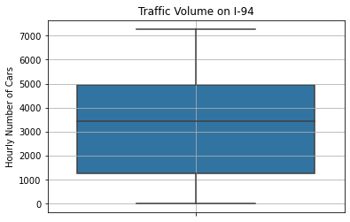
The boxplot shows that 0 is within the approximate lower bound. It is not too distant from most of the datapoints to be considered an outlier.
Let us view a histogram to understand the distribution better.
sns.histplot(
data = highway,
x = "traffic_volume",
)
plt.title("Traffic Volume on I-94")
plt.xlabel("Hourly Number of Cars")
plt.grid(True)
plt.show()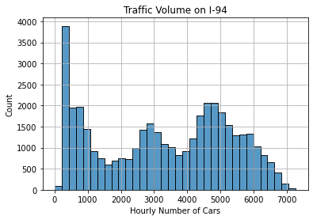
This is an unusual distribution. There appear to be 3 peaks:
- less than 1000 cars
- around 3000 cars
- around 4500 cars
It is common that less than 1000 cars pass through this I-94 station per hour. Therefore, it is likely that the 0-values are not outliers and do not need to be dropped from the dataset.
Data cleaning is done, so here are the new descriptive statistics for the dataset.
highway.describe(
include = "all",
datetime_is_numeric = True,
)| holiday | temp | rain_1h | snow_1h | clouds_all | weather_main | weather_description | date_time | traffic_volume | |
|---|---|---|---|---|---|---|---|---|---|
| count | 40564 | 40564.000000 | 40564.000000 | 40564.000000 | 40564.000000 | 40564 | 40564 | 40564 | 40564.000000 |
| unique | 12 | NaN | NaN | NaN | NaN | 11 | 35 | NaN | NaN |
| top | None | NaN | NaN | NaN | NaN | Clouds | sky is clear | NaN | NaN |
| freq | 40511 | NaN | NaN | NaN | NaN | 15123 | 11632 | NaN | NaN |
| mean | NaN | 281.385602 | 0.076353 | 0.000117 | 44.209299 | NaN | NaN | 2015-12-24 02:14:28.937974528 | 3291.081402 |
| min | NaN | 243.390000 | 0.000000 | 0.000000 | 0.000000 | NaN | NaN | 2012-10-02 09:00:00 | 0.000000 |
| 25% | NaN | 271.850000 | 0.000000 | 0.000000 | 1.000000 | NaN | NaN | 2014-02-03 02:45:00 | 1249.750000 |
| 50% | NaN | 282.867500 | 0.000000 | 0.000000 | 40.000000 | NaN | NaN | 2016-06-02 19:30:00 | 3429.000000 |
| 75% | NaN | 292.280000 | 0.000000 | 0.000000 | 90.000000 | NaN | NaN | 2017-08-03 02:15:00 | 4952.000000 |
| max | NaN | 310.070000 | 55.630000 | 0.510000 | 100.000000 | NaN | NaN | 2018-09-30 23:00:00 | 7280.000000 |
| std | NaN | 13.092942 | 0.769729 | 0.005677 | 38.682163 | NaN | NaN | NaN | 1984.638849 |
Due to data cleaning, the following have changed:
- Minimum
tempis 243.39 Kelvin - Maximum
rain_1his 55.63 mm
These are more reasonable values than before.
Exploratory Data Analysis
Traffic Volume: Day vs. Night
At the end of the data cleaning, we noticed that there were 3 peaks (most common values) in the traffic volume data. It is possible that this can be explained by comparing traffic volume between daytime and nighttime.
In order to do this, we can make a new column half which labels each entry as “day” or “night.” We will consider daytime to be from 6:00 AM to 6:00 PM, or 6:00 to 18:00.
highway["half"] = (
highway["date_time"]
.dt.hour.between(6, 17) # Boolean Series where True represents day
.replace({True: "day", False: "night"}) # Replace booleans with strings
)
highway["half"].value_counts()night 20418
day 20146
Name: half, dtype: int64There are 20418 nighttime entries and 20146 daytime entries.
Now we can compare the day and night histograms for traffic volume.
sns.histplot(
data = highway,
x = "traffic_volume",
hue = "half",
palette = "RdBu",
)
plt.title("Traffic Volume on I-94: Day and Night")
plt.xlabel("Hourly Number of Cars")
plt.grid(True)
plt.show()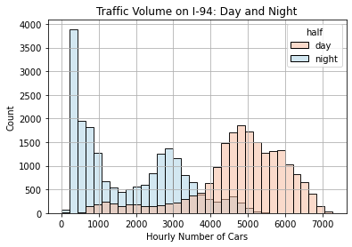
The histogram above shows that:
- In the nighttime, the traffic volume is commonly under 1000 or around 3000.
- In the daytime, the traffic volume is commonly around 5000.
Therefore, traffic is generally heavier in the daytime, between 6:00 AM and 6:00 PM.
Since we want to determine what influences heavy traffic, it would be best to focus our analysis on the daytime entries. Thus, such entries will be put in a separate DataFrame called daytime.
daytime = (
highway
.loc[highway["half"] == "day"]
.drop(columns = "half")
)
daytime.describe(
include = "all",
datetime_is_numeric = True,
)| holiday | temp | rain_1h | snow_1h | clouds_all | weather_main | weather_description | date_time | traffic_volume | |
|---|---|---|---|---|---|---|---|---|---|
| count | 20146 | 20146.000000 | 20146.000000 | 20146.000000 | 20146.000000 | 20146 | 20146 | 20146 | 20146.000000 |
| unique | 1 | NaN | NaN | NaN | NaN | 10 | 33 | NaN | NaN |
| top | None | NaN | NaN | NaN | NaN | Clouds | sky is clear | NaN | NaN |
| freq | 20146 | NaN | NaN | NaN | NaN | 8360 | 4971 | NaN | NaN |
| mean | NaN | 282.018771 | 0.076210 | 0.000124 | 47.342500 | NaN | NaN | 2015-12-26 11:32:49.582050816 | 4784.630100 |
| min | NaN | 243.390000 | 0.000000 | 0.000000 | 0.000000 | NaN | NaN | 2012-10-02 09:00:00 | 1.000000 |
| 25% | NaN | 272.220000 | 0.000000 | 0.000000 | 1.000000 | NaN | NaN | 2014-02-04 08:15:00 | 4311.000000 |
| 50% | NaN | 283.640000 | 0.000000 | 0.000000 | 40.000000 | NaN | NaN | 2016-06-07 11:30:00 | 4943.000000 |
| 75% | NaN | 293.370000 | 0.000000 | 0.000000 | 90.000000 | NaN | NaN | 2017-08-06 09:45:00 | 5678.000000 |
| max | NaN | 310.070000 | 44.450000 | 0.510000 | 100.000000 | NaN | NaN | 2018-09-30 17:00:00 | 7280.000000 |
| std | NaN | 13.330019 | 0.737429 | 0.005673 | 37.808456 | NaN | NaN | NaN | 1293.502893 |
This DataFrame contains only 20146 rows. The descriptive statistics are naturally somewhat different from before.
Effect of Units of Time
It is possible that traffic volume is influenced by certain units of time. For example, it could be influenced by the month, the day of the week, or the hour of the day. In this section, we investigate these factors.
By Month
First, does the month affect the traffic volume?
Let us make a new column that indicates the month as a number.
daytime["month"] = daytime["date_time"].dt.month
daytime["month"]0 10
1 10
2 10
3 10
4 10
..
48191 9
48192 9
48194 9
48196 9
48197 9
Name: month, Length: 20146, dtype: int64Then, we can calculate and graph the average traffic volume per month. The median will be used instead of the mean since the data are not normally distributed.
Table:
(daytime
.groupby("month")
.median()
[["traffic_volume"]]
)| traffic_volume | |
|---|---|
| month | |
| 1 | 4651.5 |
| 2 | 4886.0 |
| 3 | 5062.0 |
| 4 | 5105.0 |
| 5 | 5052.0 |
| 6 | 5050.0 |
| 7 | 4799.5 |
| 8 | 5056.0 |
| 9 | 4925.5 |
| 10 | 5056.0 |
| 11 | 4876.0 |
| 12 | 4722.0 |
Line chart:
sns.lineplot(
data = daytime,
x = "month",
y = "traffic_volume",
estimator = np.median,
ci = None,
)
plt.title("Effect of Month on Traffic Volume")
plt.xlabel("Month"),
plt.ylabel("Median Hourly Number of Cars")
plt.grid(True)
plt.show()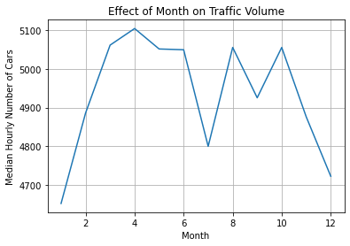
The line chart shows that the median traffic volume is highest in April, possibly because this is in spring. Traffic volume is lowest in January and December since these are in the middle of winter. July also has less traffic since it is in the middle of summer.
By Day of the Week
Next, we will investigate the effect of the day of the week on the traffic volume.
daytime["day"] = daytime["date_time"].dt.dayofweek
(daytime
.groupby("day")
.median()
[["traffic_volume"]]
)| traffic_volume | |
|---|---|
| day | |
| 0 | 4971.5 |
| 1 | 5268.0 |
| 2 | 5355.0 |
| 3 | 5404.0 |
| 4 | 5399.0 |
| 5 | 4194.0 |
| 6 | 3737.0 |
Note that 0 means Monday and 6 means Sunday.
The corresponding line chart is shown below.
sns.lineplot(
data = daytime,
x = "day",
y = "traffic_volume",
estimator = np.median,
ci = None,
)
plt.title("Effect of Day of Week on Traffic Volume")
plt.xlabel("Day of the Week"),
plt.ylabel("Median Hourly Number of Cars")
plt.grid(True)
plt.show()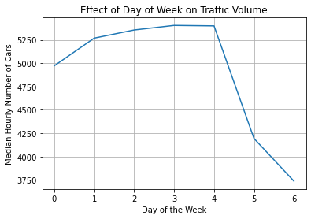
The line chart shows that the traffic volume is very high from Monday to Friday, then dips by 1000 cars on Saturday and Sunday. It makes sense that traffic is heavier on weekdays and lighter on weekends.
By Hour of the Day
Lastly, we will investigate the effect of the time of day on the traffic volume. Since we have narrowed the dataset down to daytime entries, only hours from 6:00 AM to 6:00 PM are included.
First, though, let’s make a column that indicates weekdays and weekends so that we can compare them.
daytime["day_type"] = daytime["day"].replace({
0: "business day",
1: "business day",
2: "business day",
3: "business day",
4: "business day",
5: "weekend",
6: "weekend",
})Next, below is the table of median traffic volume grouped by the day of the week and the type of day.
daytime["hour"] = daytime["date_time"].dt.hour
(daytime
.groupby(["hour", "day_type"])
.median()
[["traffic_volume"]]
)| traffic_volume | ||
|---|---|---|
| hour | day_type | |
| 6 | business day | 5588.0 |
| weekend | 1092.0 | |
| 7 | business day | 6320.5 |
| weekend | 1547.0 | |
| 8 | business day | 5751.0 |
| weekend | 2268.0 | |
| 9 | business day | 5053.0 |
| weekend | 3147.0 | |
| 10 | business day | 4484.5 |
| weekend | 3722.0 | |
| 11 | business day | 4714.0 |
| weekend | 4114.0 | |
| 12 | business day | 4921.0 |
| weekend | 4442.5 | |
| 13 | business day | 4919.5 |
| weekend | 4457.0 | |
| 14 | business day | 5232.0 |
| weekend | 4457.0 | |
| 15 | business day | 5740.0 |
| weekend | 4421.0 | |
| 16 | business day | 6403.5 |
| weekend | 4438.0 | |
| 17 | business day | 5987.0 |
| weekend | 4261.5 |
The hours are in 24-hour time; 17:00 represents the hour from 5:00 PM to 6:00 PM.
In order to understand this table better, we can visualize it in the line chart below.
sns.lineplot(
data = daytime,
x = "hour",
y = "traffic_volume",
hue = "day_type",
estimator = np.median,
ci = None,
)
plt.title("Effect of Hour of Day on Traffic Volume")
plt.xlabel("Hour of the Day"),
plt.ylabel("Median Hourly Number of Cars")
plt.legend(title = "Day Type")
plt.grid(True)
plt.show()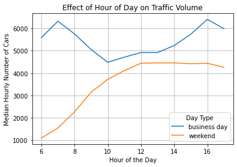
On business days, traffic is heaviest at 7:00 AM and 4:00 PM. These are the times when people travel to or from work. Traffic is lightest around noontime.
On weekends, traffic volume increases from 6:00 AM to 12:00 PM and plateaus from there on. People are free to travel at any time on weekends since most don’t have work. However, the number of cars is still lower on weekends compared to business days.
Effect of Weather
Up until now, we have investigated the possible effects of different units of time on the traffic volume. In this section, we focus on how traffic is affected by the weather.
The following are the weather-related columns in the dataset:
temprain_1hsnow_1hclouds_allweather_mainweather_description
The first 4 are numerical and the last 2 are categorical.
Numerical Weather Columns
Let us inspect the Pearson’s correlation coefficient between traffic volume and each of the numerical weather columns.
daytime.corr().loc[
["temp", "rain_1h", "snow_1h", "clouds_all"],
["traffic_volume"]
]| traffic_volume | |
|---|---|
| temp | 0.124311 |
| rain_1h | -0.022817 |
| snow_1h | -0.004145 |
| clouds_all | 0.000621 |
All 4 numerical weather columns appear to have very weak correlations with traffic volume.
The highest correlation involves temperature, but the coefficient is only 12.43. This indicates a weak positive relationship. As temperature increases, traffic volume also increases, but not consistently.
We can understand the correlation better using a scatter plot.
sns.scatterplot(
data = daytime,
x = "temp",
y = "traffic_volume",
ci = None,
)
plt.title("Effect of Temperature on Traffic Volume")
plt.xlabel("Temperature (Kelvin)"),
plt.ylabel("Median Hourly Number of Cars")
plt.grid(True)
plt.show()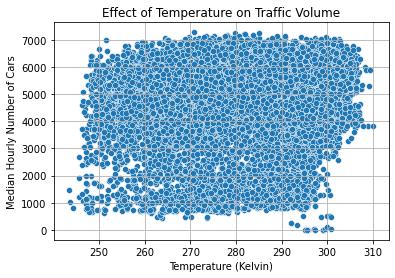
Unfortunately, the datapoints are scattered quite consistently throughout all combinations of temperature and traffic volume. The correlation is weak; temperature is not a reliable indicator of traffic. Neither are the other numerical weather columns, since their coefficients were even weaker.
Categorical Weather Columns
Next, we’ll see if the categorical weather columns can serve as better indicators of heavy traffic.
Short Descriptions of Weather
The weather_main column contains short, 1-word descriptions of the weather.
What are the categories under weather_main?
daytime["weather_main"].value_counts()Clouds 8360
Clear 5821
Rain 2392
Mist 1441
Snow 1165
Haze 472
Drizzle 223
Thunderstorm 175
Fog 90
Smoke 7
Name: weather_main, dtype: int64Clouds, Clear, and Rain are the most frequent descriptions of the weather.
Next, let us investigate the effect of the weather description on the traffic volume. The table is shown below.
(daytime
.groupby("weather_main")
.median()
[["traffic_volume"]]
)| traffic_volume | |
|---|---|
| weather_main | |
| Clear | 4936.0 |
| Clouds | 4974.5 |
| Drizzle | 5132.0 |
| Fog | 5588.0 |
| Haze | 4817.5 |
| Mist | 5053.0 |
| Rain | 4975.0 |
| Smoke | 4085.0 |
| Snow | 4570.0 |
| Thunderstorm | 4875.0 |
This is visualized in the bar plot below.
sns.barplot(
data = daytime,
x = "weather_main",
y = "traffic_volume",
estimator = np.median,
ci = None,
)
plt.title("Effect of Short Weather Description on Traffic Volume")
plt.xlabel("Short Weather Description"),
plt.ylabel("Median Hourly Number of Cars")
plt.xticks(rotation = 45)
plt.grid(True)
plt.show()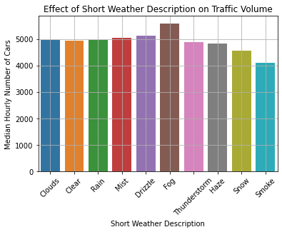
The traffic volume appears to be mostly consistent across short weather descriptions. Notably:
- Traffic is heaviest during fog (5588 cars).
- Traffic is lightest when there is smoke (4085 cars).
However, the effects are quite small, reaching only up to a difference of 1000 cars.
Long Descriptions of Weather
The weather_description column contains longer descriptions of the weather.
Below are its categories.
daytime["weather_description"].value_counts()sky is clear 4971
broken clouds 2683
overcast clouds 2526
scattered clouds 2068
mist 1441
light rain 1415
few clouds 1083
Sky is Clear 850
light snow 811
moderate rain 666
haze 472
heavy snow 249
heavy intensity rain 207
light intensity drizzle 160
proximity thunderstorm 136
snow 90
fog 90
proximity shower rain 89
drizzle 57
thunderstorm 22
light shower snow 11
light intensity shower rain 7
smoke 7
thunderstorm with light rain 7
very heavy rain 7
heavy intensity drizzle 6
thunderstorm with heavy rain 5
thunderstorm with rain 3
sleet 3
light rain and snow 1
freezing rain 1
proximity thunderstorm with drizzle 1
proximity thunderstorm with rain 1
Name: weather_description, dtype: int64Notice that there is a sky is clear value and a Sky is Clear value with different capitalization. It is likely that these two categories mean the same thing, so let us combine them.
daytime["weather_description"].replace(
{"Sky is Clear": "sky is clear"},
inplace = True,
)
daytime["weather_description"].value_counts().head()sky is clear 5821
broken clouds 2683
overcast clouds 2526
scattered clouds 2068
mist 1441
Name: weather_description, dtype: int64The sky is clear category now has 5821 entries.
Now that that’s cleaned, let’s make a table showing the effect of the long weather description on the traffic volume.
(daytime
.groupby("weather_description")
.median()
[["traffic_volume"]]
)| traffic_volume | |
|---|---|
| weather_description | |
| broken clouds | 4925.0 |
| drizzle | 5132.0 |
| few clouds | 4977.0 |
| fog | 5588.0 |
| freezing rain | 4762.0 |
| haze | 4817.5 |
| heavy intensity drizzle | 5824.5 |
| heavy intensity rain | 4922.0 |
| heavy snow | 4673.0 |
| light intensity drizzle | 5086.5 |
| light intensity shower rain | 4695.0 |
| light rain | 5011.0 |
| light rain and snow | 5544.0 |
| light shower snow | 4324.0 |
| light snow | 4601.0 |
| mist | 5053.0 |
| moderate rain | 4940.0 |
| overcast clouds | 4968.0 |
| proximity shower rain | 4910.0 |
| proximity thunderstorm | 4849.5 |
| proximity thunderstorm with drizzle | 6667.0 |
| proximity thunderstorm with rain | 5730.0 |
| scattered clouds | 5032.5 |
| sky is clear | 4936.0 |
| sleet | 5174.0 |
| smoke | 4085.0 |
| snow | 4032.0 |
| thunderstorm | 5578.0 |
| thunderstorm with heavy rain | 5278.0 |
| thunderstorm with light rain | 4073.0 |
| thunderstorm with rain | 4270.0 |
| very heavy rain | 4802.0 |
The table is visualized in the bar graph below.
plt.figure(figsize = (14, 5))
sns.barplot(
data = daytime,
x = "weather_description",
y = "traffic_volume",
estimator = np.median,
ci = None,
)
plt.title("Effect of Long Weather Description on Traffic Volume")
plt.xlabel("Long Weather Description"),
plt.ylabel("Median Hourly Number of Cars")
plt.xticks(rotation = 45, ha = "right")
plt.grid(True)
plt.show()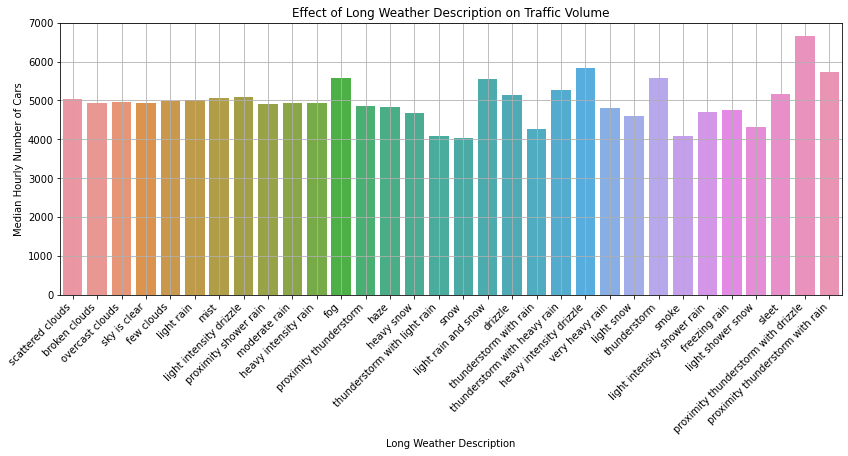
Similar to the bar graph of short weather descriptions, most of the values are around 5000 cars. Notably:
- Traffic is heaviest in a proximity thunderstorm with drizzle (6667 cars).
- The word “proximity” was likely used to emphasize that the storm was very close to the station.
- It makes sense that a drizzling thunderstorm directly over the highway would reduce visibility and make traffic pile up.
- Traffic is lightest in snow (4032 cars).
- It is likely that more people choose not to travel outside when it is snowing.
Conclusion
This project aimed to determine reliable indicators of heavy traffic along the I-94 highway. Data were narrowed down to daytime (as opposed to nighttime) entries, which have higher traffic volumes. Exploratory data analysis was conducted using mostly Seaborn visualizations.
The following conclusions were drawn:
- Time has various effects on traffic volume. Traffic is heavier when:
- It is daytime (between 6:00 AM and 6:00 PM).
- The month is from March to June.
- The day is a business day, as opposed to a weekend.
- The hour is 7:00 AM or 4:00 PM on a business day.
- Weather affects traffic volume to a lesser extent. Traffic is heavier when:
- There is fog on the road (or other visual obstructions).
- There is a nearby thunderstorm with drizzle or rain.
Thanks for reading!